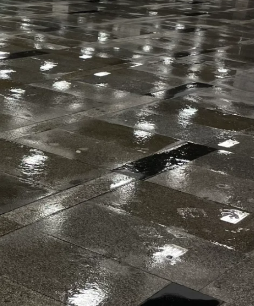

Napló

További intézkedést nem igényel, írja vastagon szedve a díjjegyzéken, ami a végrehajtói irodából érkezik. De hiába a jogi szöveg, a paragrafus jelek, a számok meg a táblázat, mégis, mintha egy zárójelentést olvasnék – a sebről, ami éveken keresztül tátongott rajtam. Ami közel egy évtizeden át újra és újra kifakadt, vérzett, gennyedzett. Amit néha én vakartam el, és olyan is volt, hogy valaki más tépte fel a vart.
Huszonkét évesen, 2017 októberében tettem feljelentést kapcsolati erőszak, személyi szabadság megsértése és rongálás miatt – másodszor. Az első alkalommal megszüntették a nyomozást. Aztán hónapokkal később kiderült, hogy hiába a több oldalnyi bizonyíték, fénykép és látlelet, a rendőrség mégis inkább csak zaklatás ügyében kezd vizsgálódni.
Szakadt a plezúr, ahogy megtudtam, hogy Ádám sorozat-elkövető. Hogy bár feljelentést tettem, és a hatóságok birtokában volt minden, amivel megakadályozhatták volna, a szakításunk után a párja kezét törte el, majd az azt követő barátnőjét is rendszeresen megverte.
Amikor újabb vallomásokat kellett tennem, tételesen, bizonyítékokkal cáfolva a rengeteg mocskot. Hogy nem ő ütött monoklit a szemem köré, csak koncerten voltam, és hát én így szoktam szórakozni. Hogy hiába az igazságügyi orvosszakértő véleménye, ő nem tudja, tényleg, őszintén, hogy a másik lány keze miként tört el. És a harmadikat sem erőszakolta meg, egyszerűen így szeretik a szexet. Amikor a lakásom előtt állt az autója, meg amikor az anyja kommentekben kezdett fenyegetni.
Mélyült a seb minden alkalommal, amikor az ügyeletes orvos kihagyott sérüléseket a zárójelentésből, mert „az nem látszik eléggé a tetoválástól”, amikor elhalasztották a tárgyalást – vagy ha úgy is tűnt, hogy megtartják, végül a bíró volt az, aki nem jött el. Amikor megértettem, hogy a büntetőeljárás nem rólam szól. Ugyanolyan bizonyíték vagyok csak benne, mint bármelyik papír.
És gyógyult is, legalább ennyiszer.
Azoktól az emberektől, akik itt vannak velem, akik úgy vesznek körül, hogy soha, egy pillanatra sem kérdőjelezték meg a történteket. A lakásunkba érkező rendőröktől, akik felismerték a helyzetet, és bevitték Ádámot, hogy nyugodtan tudjunk beszélni. Barátoktól, akik akkor is mellettem álltak, amikor nem tudtam mozdulni. Akik látták rajtam a sebet – volt, hogy szó szerint is –, és értették, hogy fáj, hogy nehéz. Hogy nem megy elsőre. Akik kocsiba ültettek, majd órákon át vártak velem a baleseti intézet narancssárga műanyagszékein, meg akik pénzt adtak, ha az illetékbélyegre nekem már nem maradt.
Gyógyult a kéztől, ami mindig utánam nyúlt. Ami húzott előre, ha nem tudtam lépni, vezetett, amikor nem láttam az utat, de muszáj volt haladni. Tartott szakadatlanul, amikor azt hittem, elértem a gödör alját, és úgy adott erőt, mintha soha ki nem fogyna belőle. Határozott mozdulattal nyomott szorító kötést a sebre, ahogy megmutattam neki. Nevet adott a fájdalomnak, szavakat arra, amiről sokáig csak neki mertem beszélni.
Leírta helyettem, amit még nem tudtam közel engedni magamhoz – hogy alulírott Mózes Zsófia a mellékletben csatolt meghatalmazással igazolt jogi képviselőm útján feljelentést kívánok tenni.
Kimondta, hogy bántalmazó, ki, hogy erőszak, hogy bűncselekmény. Bekezdéseket formált abból, amivel akkor nem tudtam szembesülni, és mindig csak annyit rakott rám, amennyit elbírtam.
Sosem áltatott, a legelején megmondta, hogy kurva kemény lesz. Hogy a büntetőeljárás a legritkább esetben szolgáltat csak igazságot úgy, hogy én is annak érzem. Hogy indíthatunk polgári pert, de kevés a precedens, a bírók nem tudnak mihez viszonyítani, lelki sérüléseket beárazni meg pláne. Hogy nem ígér semmit, mert a rendszer rohad, és ha ő ki is tisztítja a sebet, más tövig belenyomja az ujját majd.
Arról viszont nem beszélt, hogy akkor is mellettem lesz. Gondos odafigyeléssel ápolja a sérülést, töröl ki belőle minden piszkot, amit más belehányt – amíg meg nem tanulom, hogyan kell kezelni. Velem örül, amikor az ítéletben azt olvassuk végre, hogy a felperes személyiségét az alperes részéről érő támadás súlyossága külön bizonyítás nélkül is milliós nagyságrendű sérelemdíjat alapoz meg, és akkor is, amikor két évvel később a végrehajtó inkasszálja a pénzt.
Nem mondta, hogy itt lesz, amikor megtalálom a saját szavaimat, és ahogy a hangomat, úgy a szabadságomat is visszaadja majd.
Két feljelentés, két per, egy végrehajtási eljárás, és majdnem napra pontosan nyolc év – több mint az eddigi életem negyede. Az út végén pedig itt áll, feketén-fehéren: további intézkedést nem igényel. Nem kell többet áttörölni, fertőtleníteni, kötést cserélni. Láthatatlan burkot vont köré a hála, és nincs már, ami feltépje a hámot.